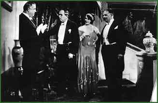

|  | |||
| The protagonist of the famous film was Gyula Kabos (1888–1941). Script by István Zágon (1893–1975) and Károly Nóti (1892–1954), directed by István Székely (1899–1979). From left to right: Gyula Csortos (1883–1945), Gyula Kabos, Mici Haraszti and Sándor Góth (1869–1946). | |||